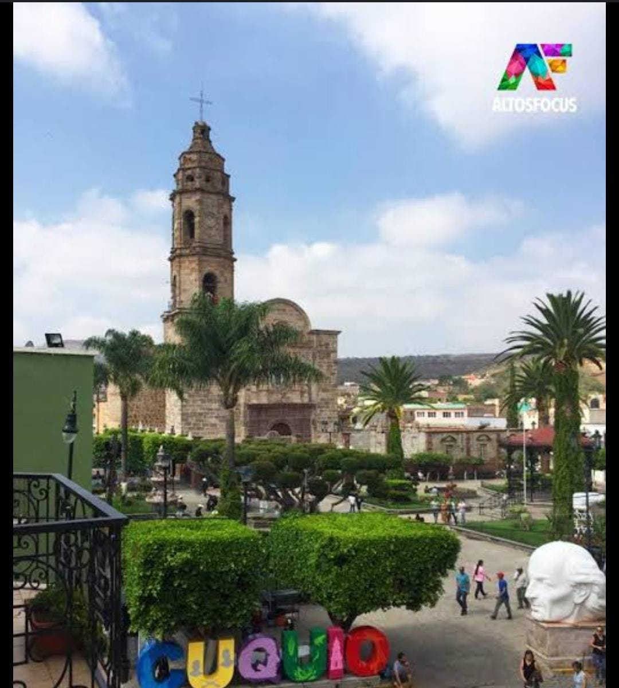
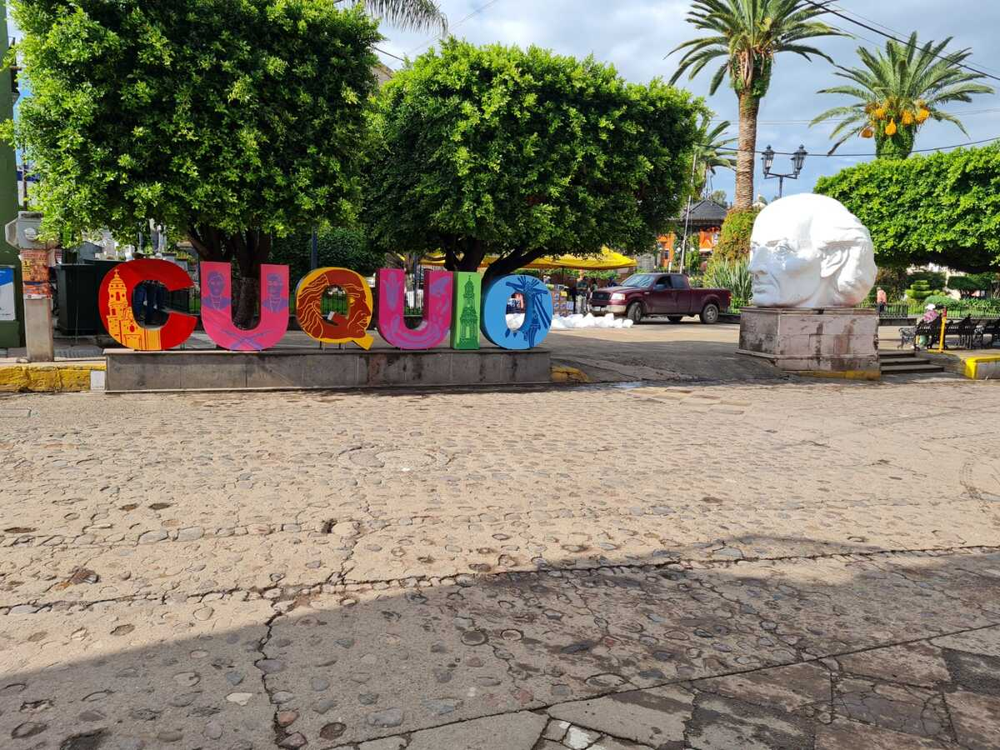
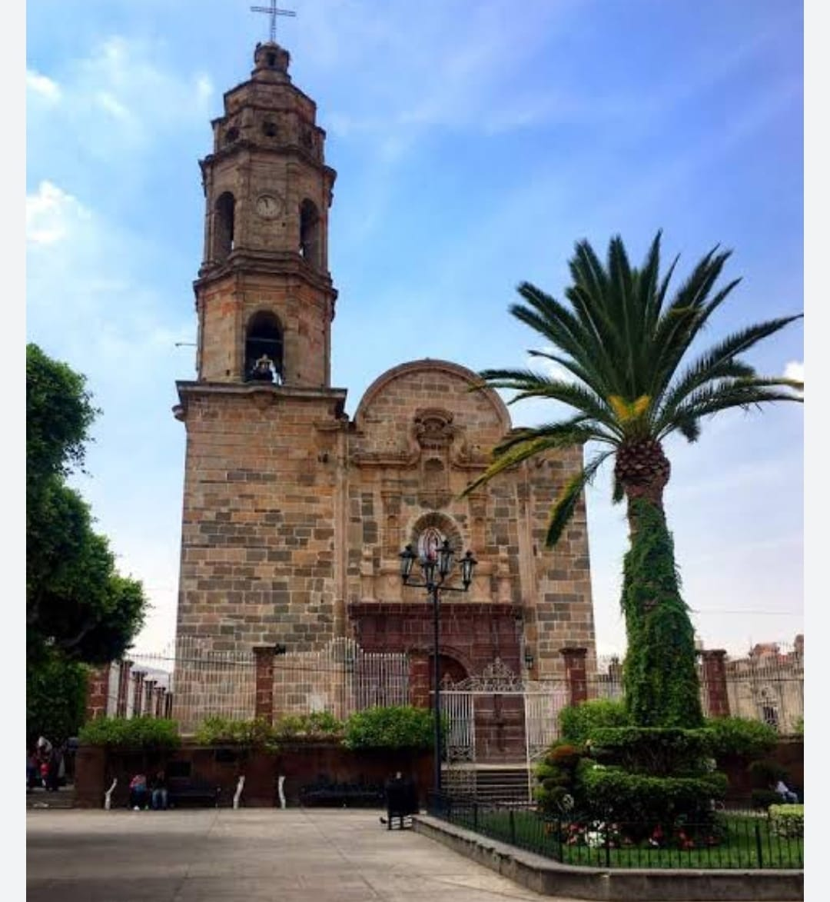
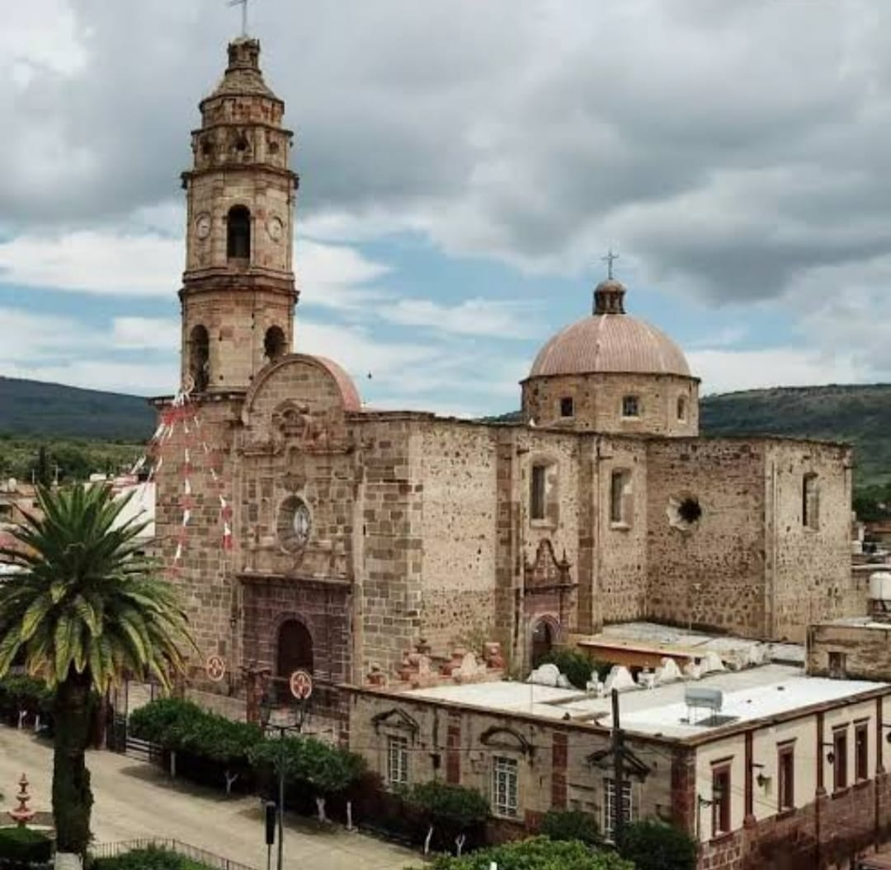
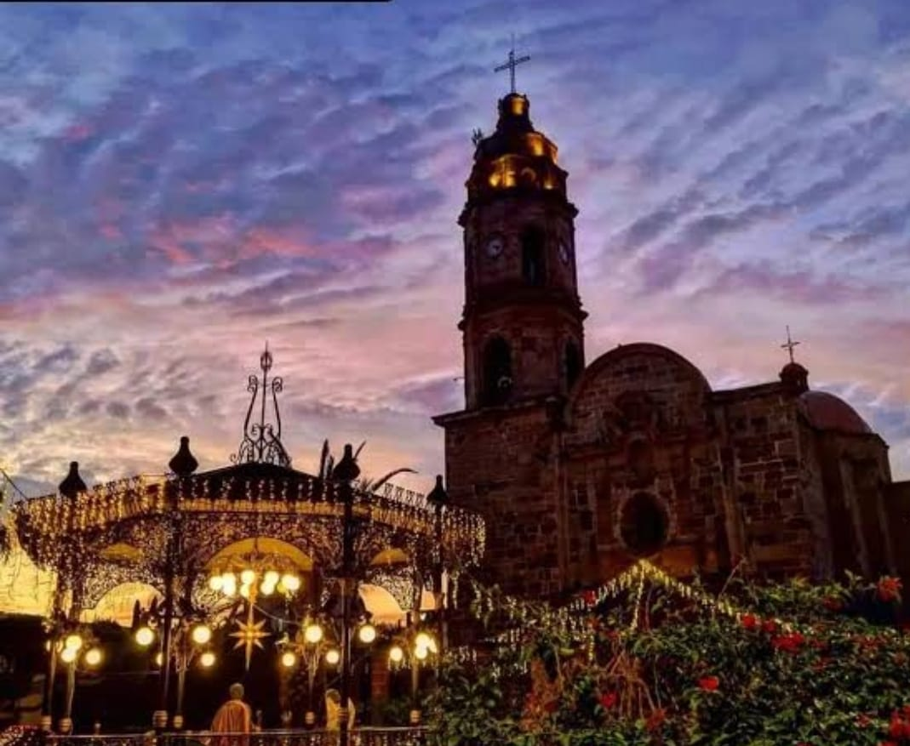
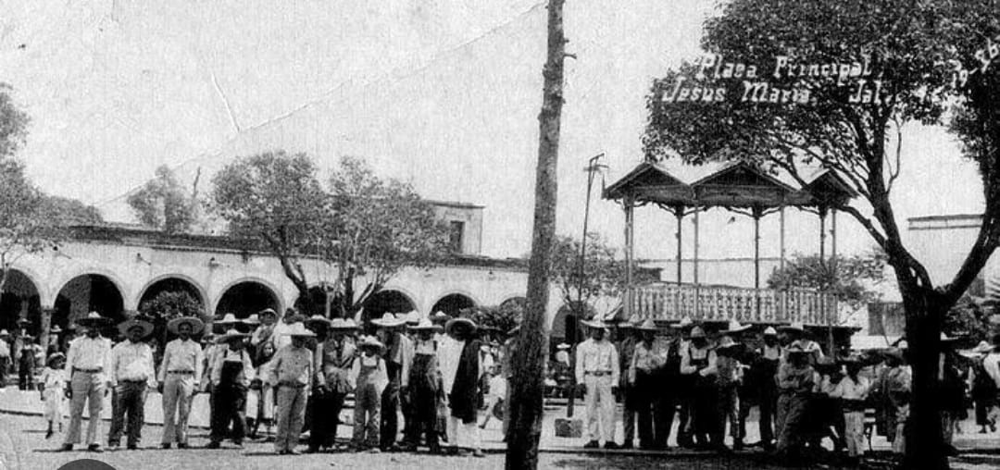
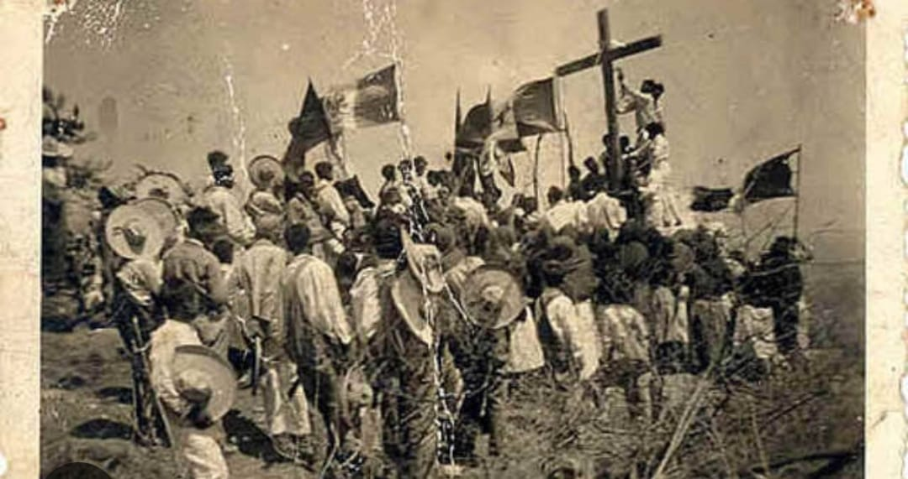
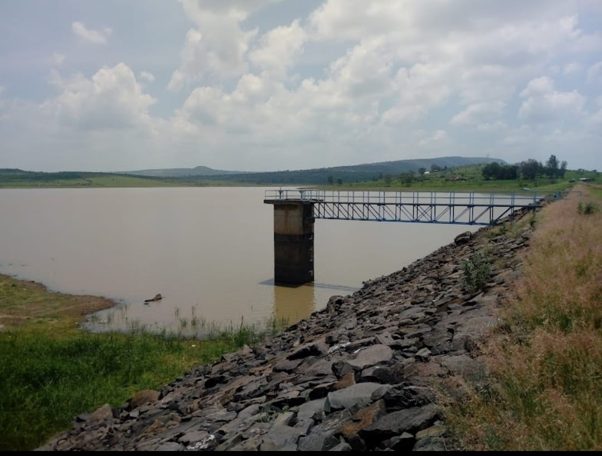
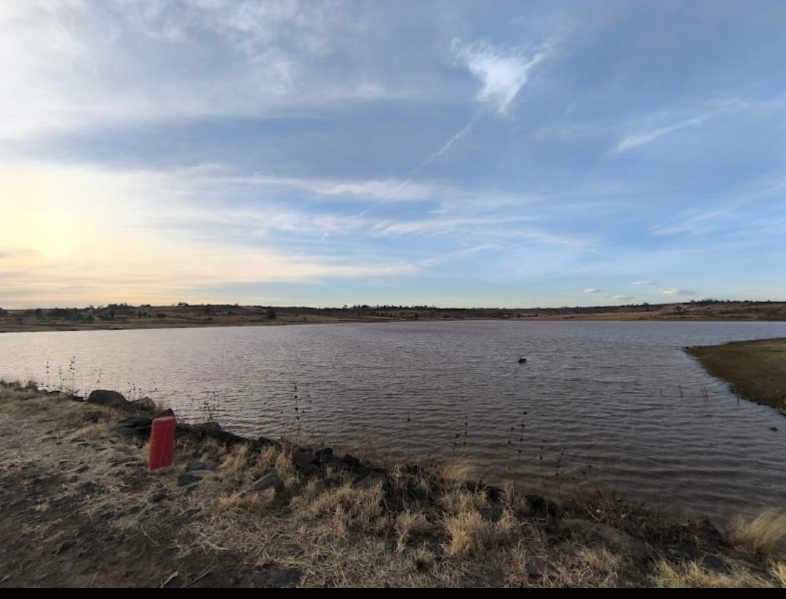
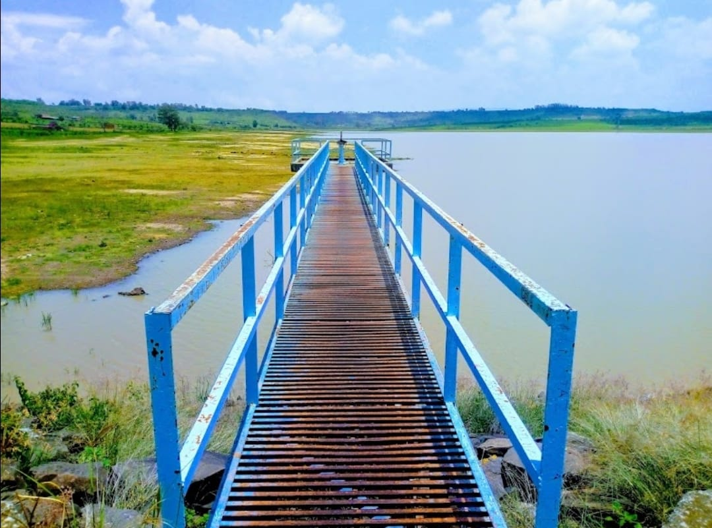

Cuquío, Jalisco, tiene una historia que se remonta a tiempos prehispánicos. Su nombre proviene del náhuatl "Cuixui,"
que significa milano, o del tarasco, donde se interpreta como "lugar de sapos." Fue habitado originalmente por los purépechas,
quienes se asentaron en la región después de la Guerra del Salitre. En 1530, Nuño de Guzmán conquistó la región y estableció su
principal centro de operaciones en Cuquío. Durante la época colonial, la sede del corregimiento estuvo en Tlacotlán hasta 1690,
cuando se trasladó a Cuquío, donde permaneció hasta la Independencia de México. En 1762, comenzó la construcción del templo
principal, que se completó en 1834, convirtiéndose en un símbolo importante de la comunidad.En 1823, Cuquío fue designado
como partido con ayuntamiento, y en 1824 se constituyó como departamento del Estado, obteniendo la categoría de villa. En 1837,
se decretó que Cuquío fuera cabecera de partido, y en 1846 fue declarado cabecera de departamento del Cantón de Guadalajara.


El Templo de San Felipe Apóstol en Cuquío, Jalisco, es una joya arquitectónica y un importante centro religioso de la región. Su construcción
inició en el año 1762 y se finalizó en 1834, un proyecto que tomó más de siete décadas y que fue llevado a cabo gracias al esfuerzo conjunto
de la comunidad y los recursos locales. El templo destaca por su imponente arquitectura de estilo neoclásico con toques barrocos. En su interior,
se pueden apreciar hermosos detalles en altares, retablos y ornamentos que reflejan la dedicación y la devoción de sus constructores. Su fachada,
trabajada en cantera, muestra un diseño equilibrado y solemne que ha resistido el paso del tiempo. A lo largo de su historia, el Templo de San Felipe
Apóstol ha sido testigo de innumerables celebraciones religiosas y eventos significativos para la comunidad. Es un espacio donde los habitantes de Cuquío
se han reunido para expresar su fe y preservar sus tradiciones, algunos de los hechos que ha pasado y se sigue notando sus marcas en las partes del templo
fue la Guerra Cristera, ya que en la parte alta del Templo se notan impactos de balas



Durante la Guerra Cristera (1926-1929), Cuquío, Jalisco, fue escenario de importantes enfrentamientos entre los cristeros y las fuerzas federales. Uno de
los eventos más destacados fue la Batalla de Cuquío, que tuvo lugar el 27 de marzo de 1927. En esta batalla, aproximadamente 900 cristeros, liderados por
el general Miguel Hernández González, se enfrentaron a 2,000 soldados federales bajo el mando de los generales Ubaldo G. Garza y Espiridión Rodríguez Escobar.
Los cristeros lograron tomar Cuquío inicialmente, estableciendo un pequeño cuartel militar y reuniéndose con otros líderes cristeros. Sin embargo, las fuerzas
federales reforzaron sus tropas y lanzaron una ofensiva que resultó en la expulsión de los cristeros de Cuquío. Aunque los cristeros mostraron valentía y estrategia,
la falta de armamento y la superioridad numérica de los federales llevaron a su retirada1. Cuquío jugó un papel importante como punto estratégico y símbolo de
resistencia durante la Guerra Cristera. La lucha en esta región reflejó la determinación de los cristeros por defender su fe y sus derechos religiosos frente a las
políticas restrictivas del gobierno de Plutarco Elías Calles.


La presa de Cuquío, también conocida como "Los Gigantes," se encuentra en el municipio de Cuquío, Jalisco. Es una de las fuentes de agua importantes en la región
y actualmente tiene un nivel de llenado del 58%, según el monitoreo más reciente. Esta presa forma parte del sistema de abastecimiento de agua en Cuquio Jalisco, que incluye
otras presas como Calderón y La Red. La presa principalmente fue creada para abastecer lo sitemas de riego de ese entonces ya que acostumbraban a sembrar muy pronto y ademas
les servia a los demas pueblos cercanos y familias cercanas a ella.


